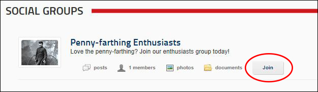

Joining a Social Group
How to join a public social group using the Social Groups module. Group members are granted access to view Group Activity (journal entries posted to this group by all group members) and view details of other group members on the Members Directory module.
- Navigate to a Social Groups module which displays a list of the social groups you can join.
- Click the Join link - OR - Click on the name of the required Social Group to view more information and then click the Join Group link.

Depending on the Social Group, your request to join will be handled in one of these ways:
- You are granted immediate access to the group and are taken to the Group Activity page.
- The Group Administrator (the person who created the group) will need to approve your request to join the group before access is granted. You will be sent an message when your request is processed.